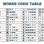
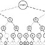

Séquence 05 : Programmation
Compétences Du Programme (Cycle 4) :
SFC31 - Identifier les données utilisées et produites par le programme associé à une fonctionnalité d’un OST (à partir d’un programme existant).
SFC32 - Comprendre et traduire en un algorithme en langage naturel le programme associé à une fonctionnalité d’un OST.
SFC32 - Comprendre et traduire en un algorithme en langage naturel le programme associé à une fonctionnalité d’un OST.
SFC33 - Modifier les paramètres d’un programme et identifier ou évaluer ses effets en termes de fonctionnalité.
Situation déclenchante :
Problématique : Comment organiser nos idées pour rendre un objet technique autonome ?
[chaque élève rédige ses hypothèses dans son cahier]Activité :
Activité 1 - L’algorithme : s04-activite1-algorithme-eleve.pdf
Activité 2 - Le programme informatique avec mBlock : s04-activite2-mblock-eleve.pdf
Activité 2 - Le programme informatique avec mBlock : s04-activite2-mblock-eleve.pdf
Activité 3 - Programmer une carte MICRO:BIT : s04-activite3-microbit-eleve.pdf
Ressources activité 3 :




- Tuto MICRO:BIT : Document PDF
- Table code Morse : Voir image ci-contre.
- Décodeur de code Morse : Voir image ci-contre.
- Site web de programmation : https://makecode.microbit.org/
- Site web d'information sur les cartes MICRO:BIT : https://microbit.org
Fiches De Révision :
SFC31
- SFC3a : Variables (pour stocker les données utilisées et produites par le programme)
- SFC3b : Opérateurs arithmétiques et logiques (pour traiter et manipuler les données)
- SFC3c : instruction conditionnelle
- SFC3d : instructions itératives
- SFC3h : Entrées et sorties du programme (données issues des capteurs IHM et sorties vers les actionneurs ou fichiers)
SFC32
- SFC3c - instruction conditionnelle ;
- SFC3d - instructions itératives ;
- SFC3e : structure de données « listes » afin de stocker des données issues du programme pour les parcourir et les traiter ;séquences (bloc) d’instructions ;
- SFC3f : événement ;
- SFC3g : déclenchement d’une séquence d’instructions par un événement ;
SFC33